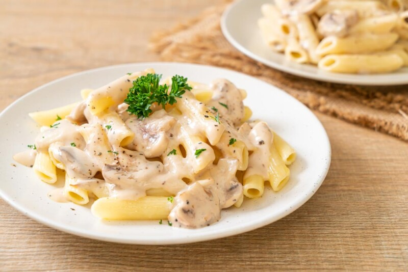

Receta de una Salsa Carbonara

Descripcion
En un día nublado como hoy, se me antojó hablar con ustedes sobre esta Salsa Carbonara que es un lujo y de los simples! Te sale una pasta con salsa carbonara y te sentís el/la chef de la familia.
Ingredientes
- 320g de fideos espaguetis
- 3 huevos (o 4 yemas)
- 150g de tocino o panceta
- 40 g. de queso pecorino o parmesano
- Sal gruesa
- Pimienta negra
Como preparar una salsa carbonara autentica
- Cortar el tocino en tiritas de 1 cm aproximadamente.
- Dorar el tocino o panceta en una sartén a fuego bajo, durante unos 10 minutos. No debe quemarse. Reservar cuando esté dorado.
- Rallar el queso bien fino.
- En un bol batir las yemas de los huevos e incorporar el queso rallado.
- Condimentar con un poco de sal y pimienta, con un tenedor batir para unir todo.
- Añadir la panceta que reservada, un poco más de queso parmesano y cerramos esparciendo por arriba un poco de pimienta para dar a nuestra carbonara el toque final.